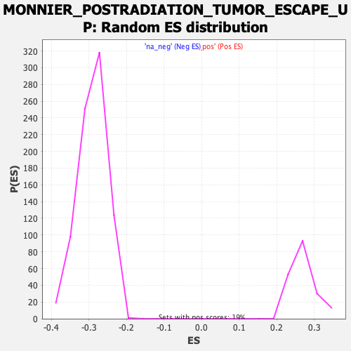

| | | Dataset | DE_genes |
| Phenotype | NoPhenotypeAvailable |
| Upregulated in class | na_neg |
| GeneSet | MONNIER_POSTRADIATION_TUMOR_ESCAPE_UP |
| Enrichment Score (ES) | -0.4921469 |
| Normalized Enrichment Score (NES) | -1.7005259 |
| Nominal p-value | 0.0 |
| FDR q-value | 0.04506339 |
| FWER p-Value | 0.564 |
Table: GSEA Results Summary
 Fig 1: Enrichment plot: MONNIER_POSTRADIATION_TUMOR_ESCAPE_UP
Fig 1: Enrichment plot: MONNIER_POSTRADIATION_TUMOR_ESCAPE_UP
Profile of the Running ES Score & Positions of GeneSet Members on the Rank Ordered List
| PROBE | GENE SYMBOL | GENE_TITLE | RANK IN GENE LIST | RANK METRIC SCORE | RUNNING ES | CORE ENRICHMENT | | 1 | OASL | | | 171 | 4.469 | 0.0029 | No |
| 2 | RAB8B | | | 376 | 2.328 | -0.0031 | No |
| 3 | CXCL6 | | | 421 | 2.072 | 0.0006 | No |
| 4 | G6PD | | | 432 | 2.002 | 0.0063 | No |
| 5 | CLEC1A | | | 454 | 1.921 | 0.0110 | No |
| 6 | NEAT1 | | | 543 | 1.622 | 0.0104 | No |
| 7 | KPNB1 | | | 604 | 1.458 | 0.0111 | No |
| 8 | NQO1 | | | 701 | 1.274 | 0.0088 | No |
| 9 | IL1RL1 | | | 720 | 1.241 | 0.0116 | No |
| 10 | MYD88 | | | 752 | 1.190 | 0.0133 | No |
| 11 | VCAN | | | 881 | 0.999 | 0.0080 | No |
| 12 | CCL5 | | | 937 | 0.940 | 0.0074 | No |
| 13 | HSPA1B | | | 948 | 0.928 | 0.0097 | No |
| 14 | ETV6 | | | 1030 | 0.819 | 0.0069 | No |
| 15 | PCBP2 | | | 1219 | 0.663 | -0.0034 | No |
| 16 | IL11 | | | 1273 | 0.625 | -0.0049 | No |
| 17 | SLC48A1 | | | 1364 | 0.577 | -0.0090 | No |
| 18 | NHLRC2 | | | 1372 | 0.575 | -0.0077 | No |
| 19 | SLC39A6 | | | 1396 | 0.568 | -0.0074 | No |
| 20 | GSR | | | 1458 | 0.540 | -0.0097 | No |
| 21 | ADIPOR1 | | | 1496 | 0.519 | -0.0105 | No |
| 22 | NRP1 | | | 1536 | 0.501 | -0.0115 | No |
| 23 | PDPN | | | 1551 | 0.494 | -0.0108 | No |
| 24 | RWDD4 | | | 1556 | 0.493 | -0.0095 | No |
| 25 | PROSER1 | | | 1561 | 0.490 | -0.0082 | No |
| 26 | ATP1B1 | | | 1594 | 0.473 | -0.0088 | No |
| 27 | PGD | | | 1598 | 0.472 | -0.0075 | No |
| 28 | SLC12A2 | | | 1635 | 0.457 | -0.0084 | No |
| 29 | RLIM | | | 1666 | 0.449 | -0.0090 | No |
| 30 | AKR1B1 | | | 1822 | 0.383 | -0.0180 | No |
| 31 | FAIM2 | | | 1844 | 0.373 | -0.0182 | No |
| 32 | PGS1 | | | 2024 | 0.319 | -0.0291 | No |
| 33 | MLLT6 | | | 2073 | 0.304 | -0.0313 | No |
| 34 | FKBP4 | | | 2088 | 0.301 | -0.0313 | No |
| 35 | CDK2AP1 | | | 2140 | 0.285 | -0.0337 | No |
| 36 | TIRAP | | | 2141 | 0.284 | -0.0328 | No |
| 37 | ZMPSTE24 | | | 2160 | 0.278 | -0.0331 | No |
| 38 | POP1 | | | 2203 | 0.266 | -0.0351 | No |
| 39 | SLCO3A1 | | | 2219 | 0.262 | -0.0352 | No |
| 40 | MRPS15 | | | 2229 | 0.260 | -0.0350 | No |
| 41 | ZKSCAN3 | | | 2266 | 0.251 | -0.0366 | No |
| 42 | ATP2B1 | | | 2291 | 0.245 | -0.0374 | No |
| 43 | SLC25A32 | | | 2445 | 0.217 | -0.0468 | No |
| 44 | PDPR | | | 2508 | 0.206 | -0.0503 | No |
| 45 | HSPA4L | | | 2532 | 0.203 | -0.0511 | No |
| 46 | NOA1 | | | 2663 | 0.182 | -0.0592 | No |
| 47 | MARCKSL1 | | | 2686 | 0.178 | -0.0601 | No |
| 48 | MTHFD1 | | | 2693 | 0.177 | -0.0599 | No |
| 49 | GTF3C6 | | | 2730 | 0.173 | -0.0617 | No |
| 50 | RAB5C | | | 2739 | 0.170 | -0.0617 | No |
| 51 | PA2G4 | | | 2752 | 0.168 | -0.0620 | No |
| 52 | CENPA | | | 2757 | 0.167 | -0.0617 | No |
| 53 | SUPV3L1 | | | 2814 | 0.159 | -0.0649 | No |
| 54 | ASPH | | | 3055 | 0.136 | -0.0804 | No |
| 55 | SRM | | | 3081 | 0.133 | -0.0816 | No |
| 56 | PPM1L | | | 3228 | 0.120 | -0.0909 | No |
| 57 | GSPT1 | | | 3246 | 0.118 | -0.0916 | No |
| 58 | AVEN | | | 3251 | 0.118 | -0.0915 | No |
| 59 | MCMBP | | | 3491 | 0.099 | -0.1070 | No |
| 60 | TTC39C | | | 3568 | 0.094 | -0.1118 | No |
| 61 | RNF183 | | | 3719 | 0.087 | -0.1214 | No |
| 62 | PC | | | 4008 | 0.069 | -0.1403 | No |
| 63 | RAD23B | | | 4017 | 0.069 | -0.1406 | No |
| 64 | MTF2 | | | 4244 | 0.056 | -0.1554 | No |
| 65 | MMP2 | | | 4306 | 0.053 | -0.1592 | No |
| 66 | TXN2 | | | 4336 | 0.051 | -0.1610 | No |
| 67 | SNTB2 | | | 4415 | 0.047 | -0.1660 | No |
| 68 | ASH2L | | | 4486 | 0.043 | -0.1705 | No |
| 69 | CAMK2D | | | 4603 | 0.036 | -0.1781 | No |
| 70 | ZNF519 | | | 4804 | 0.026 | -0.1913 | No |
| 71 | FASTKD1 | | | 4953 | 0.019 | -0.2010 | No |
| 72 | RBM27 | | | 5007 | 0.015 | -0.2045 | No |
| 73 | FDX1 | | | 5046 | 0.013 | -0.2069 | No |
| 74 | CREBBP | | | 5099 | 0.011 | -0.2103 | No |
| 75 | GLDC | | | 5109 | 0.010 | -0.2109 | No |
| 76 | PRKAR2B | | | 5206 | 0.006 | -0.2172 | No |
| 77 | MSI2 | | | 5236 | 0.005 | -0.2192 | No |
| 78 | SDAD1 | | | 5424 | -0.006 | -0.2315 | No |
| 79 | PDAP1 | | | 5468 | -0.008 | -0.2343 | No |
| 80 | SPIRE2 | | | 5480 | -0.008 | -0.2350 | No |
| 81 | ANKRD13A | | | 5488 | -0.008 | -0.2355 | No |
| 82 | ZNF322 | | | 5563 | -0.013 | -0.2403 | No |
| 83 | BBX | | | 5576 | -0.013 | -0.2411 | No |
| 84 | NFKBIE | | | 5667 | -0.019 | -0.2470 | No |
| 85 | KCNQ1OT1 | | | 5677 | -0.019 | -0.2475 | No |
| 86 | GCLM | | | 5684 | -0.019 | -0.2479 | No |
| 87 | AGO2 | | | 5782 | -0.025 | -0.2542 | No |
| 88 | MAP4K4 | | | 5804 | -0.026 | -0.2555 | No |
| 89 | NCBP1 | | | 5969 | -0.037 | -0.2663 | No |
| 90 | IL18R1 | | | 6089 | -0.045 | -0.2740 | No |
| 91 | TRMT6 | | | 6097 | -0.046 | -0.2743 | No |
| 92 | PCYT1A | | | 6148 | -0.050 | -0.2775 | No |
| 93 | SCIN | | | 6158 | -0.050 | -0.2779 | No |
| 94 | UBE2L3 | | | 6162 | -0.050 | -0.2779 | No |
| 95 | MYBL2 | | | 6173 | -0.051 | -0.2784 | No |
| 96 | PDE12 | | | 6184 | -0.052 | -0.2789 | No |
| 97 | ABCE1 | | | 6228 | -0.054 | -0.2816 | No |
| 98 | DDX3X | | | 6348 | -0.062 | -0.2893 | No |
| 99 | POLDIP2 | | | 6404 | -0.066 | -0.2927 | No |
| 100 | SYNCRIP | | | 6455 | -0.069 | -0.2958 | No |
| 101 | HMGA1 | | | 6489 | -0.072 | -0.2978 | No |
| 102 | PPIF | | | 6591 | -0.079 | -0.3042 | No |
| 103 | XPO6 | | | 6615 | -0.082 | -0.3055 | No |
| 104 | BLNK | | | 6619 | -0.082 | -0.3054 | No |
| 105 | PRCP | | | 6670 | -0.086 | -0.3084 | No |
| 106 | SRPRB | | | 6710 | -0.089 | -0.3107 | No |
| 107 | SLC11A2 | | | 6767 | -0.093 | -0.3142 | No |
| 108 | DYNC1LI2 | | | 6774 | -0.093 | -0.3143 | No |
| 109 | FASTKD3 | | | 6809 | -0.096 | -0.3162 | No |
| 110 | SLC7A6 | | | 6844 | -0.098 | -0.3181 | No |
| 111 | ANXA11 | | | 6865 | -0.100 | -0.3192 | No |
| 112 | TXNRD1 | | | 6875 | -0.101 | -0.3194 | No |
| 113 | GPC1 | | | 6937 | -0.106 | -0.3231 | No |
| 114 | SLC25A10 | | | 6987 | -0.110 | -0.3260 | No |
| 115 | ATP2A2 | | | 7041 | -0.114 | -0.3292 | No |
| 116 | ALKBH1 | | | 7062 | -0.115 | -0.3301 | No |
| 117 | GNG12 | | | 7099 | -0.118 | -0.3321 | No |
| 118 | MAN1A1 | | | 7119 | -0.120 | -0.3330 | No |
| 119 | PTDSS1 | | | 7130 | -0.121 | -0.3333 | No |
| 120 | MMD | | | 7245 | -0.131 | -0.3404 | No |
| 121 | RBM25 | | | 7250 | -0.131 | -0.3403 | No |
| 122 | BACE1 | | | 7266 | -0.133 | -0.3408 | No |
| 123 | EIF4EBP2 | | | 7275 | -0.134 | -0.3409 | No |
| 124 | RCC1 | | | 7352 | -0.141 | -0.3455 | No |
| 125 | BOP1 | | | 7354 | -0.141 | -0.3451 | No |
| 126 | SHROOM4 | | | 7372 | -0.142 | -0.3458 | No |
| 127 | TFDP2 | | | 7424 | -0.147 | -0.3487 | No |
| 128 | BTAF1 | | | 7461 | -0.149 | -0.3506 | No |
| 129 | TPM1 | | | 7474 | -0.150 | -0.3509 | No |
| 130 | GCLC | | | 7481 | -0.151 | -0.3509 | No |
| 131 | G3BP2 | | | 7490 | -0.151 | -0.3509 | No |
| 132 | SDC1 | | | 7568 | -0.159 | -0.3555 | No |
| 133 | SFPQ | | | 7614 | -0.163 | -0.3580 | No |
| 134 | TTPAL | | | 7654 | -0.166 | -0.3600 | No |
| 135 | C5orf22 | | | 7673 | -0.168 | -0.3607 | No |
| 136 | AQP5 | | | 7704 | -0.171 | -0.3621 | No |
| 137 | GATAD2A | | | 7771 | -0.176 | -0.3659 | No |
| 138 | CSNK1G1 | | | 7829 | -0.182 | -0.3691 | No |
| 139 | GEMIN5 | | | 7836 | -0.183 | -0.3689 | No |
| 140 | FAM98A | | | 7880 | -0.187 | -0.3712 | No |
| 141 | DHX33 | | | 7919 | -0.191 | -0.3731 | No |
| 142 | TSPAN5 | | | 7975 | -0.196 | -0.3761 | No |
| 143 | MRPL15 | | | 8025 | -0.201 | -0.3787 | No |
| 144 | SENP2 | | | 8123 | -0.210 | -0.3845 | No |
| 145 | SMARCC1 | | | 8135 | -0.212 | -0.3845 | No |
| 146 | XPO4 | | | 8161 | -0.214 | -0.3855 | No |
| 147 | LYPD3 | | | 8364 | -0.236 | -0.3981 | No |
| 148 | PDZRN3 | | | 8396 | -0.239 | -0.3994 | No |
| 149 | INTS6 | | | 8411 | -0.241 | -0.3996 | No |
| 150 | FAM53C | | | 8432 | -0.244 | -0.4001 | No |
| 151 | VPS33A | | | 8510 | -0.252 | -0.4044 | No |
| 152 | TNFAIP2 | | | 8546 | -0.256 | -0.4059 | No |
| 153 | NEMF | | | 8571 | -0.258 | -0.4067 | No |
| 154 | DEPTOR | | | 8619 | -0.264 | -0.4089 | No |
| 155 | PABPC4 | | | 8648 | -0.268 | -0.4099 | No |
| 156 | SLMAP | | | 8679 | -0.272 | -0.4111 | No |
| 157 | ABCC1 | | | 8735 | -0.278 | -0.4138 | No |
| 158 | PRMT6 | | | 8741 | -0.279 | -0.4133 | No |
| 159 | RPAP1 | | | 8817 | -0.288 | -0.4173 | No |
| 160 | ZFP91 | | | 8818 | -0.288 | -0.4164 | No |
| 161 | WIPF2 | | | 9003 | -0.311 | -0.4276 | No |
| 162 | MTR | | | 9052 | -0.318 | -0.4297 | No |
| 163 | ALG10B | | | 9054 | -0.318 | -0.4288 | No |
| 164 | RAB35 | | | 9085 | -0.321 | -0.4298 | No |
| 165 | ANKRD33B | | | 9123 | -0.326 | -0.4312 | No |
| 166 | POLR1A | | | 9155 | -0.329 | -0.4322 | No |
| 167 | TFRC | | | 9178 | -0.332 | -0.4326 | No |
| 168 | MTMR9 | | | 9219 | -0.337 | -0.4341 | No |
| 169 | SLC14A1 | | | 9273 | -0.344 | -0.4365 | No |
| 170 | PRPF3 | | | 9296 | -0.347 | -0.4369 | No |
| 171 | PIGL | | | 9469 | -0.368 | -0.4471 | No |
| 172 | SSX2IP | | | 9522 | -0.376 | -0.4494 | No |
| 173 | NNMT | | | 9536 | -0.378 | -0.4490 | No |
| 174 | ZDHHC3 | | | 9596 | -0.387 | -0.4517 | No |
| 175 | EAF1 | | | 9610 | -0.390 | -0.4513 | No |
| 176 | MFSD10 | | | 9681 | -0.401 | -0.4547 | No |
| 177 | GLS | | | 9724 | -0.407 | -0.4561 | No |
| 178 | ASRGL1 | | | 9750 | -0.410 | -0.4565 | No |
| 179 | AP1AR | | | 9751 | -0.410 | -0.4552 | No |
| 180 | THOC3 | | | 9864 | -0.427 | -0.4612 | No |
| 181 | ETF1 | | | 9978 | -0.444 | -0.4673 | No |
| 182 | LETMD1 | | | 10010 | -0.448 | -0.4679 | No |
| 183 | CCNB1IP1 | | | 10017 | -0.449 | -0.4669 | No |
| 184 | NAA25 | | | 10020 | -0.449 | -0.4656 | No |
| 185 | TEX261 | | | 10036 | -0.451 | -0.4651 | No |
| 186 | ARGLU1 | | | 10052 | -0.455 | -0.4647 | No |
| 187 | PTGS1 | | | 10110 | -0.463 | -0.4670 | No |
| 188 | FAM102A | | | 10214 | -0.479 | -0.4723 | No |
| 189 | XPO5 | | | 10336 | -0.496 | -0.4787 | No |
| 190 | MAP3K7 | | | 10354 | -0.499 | -0.4782 | No |
| 191 | C1orf109 | | | 10355 | -0.499 | -0.4766 | No |
| 192 | ZMAT3 | | | 10376 | -0.502 | -0.4764 | No |
| 193 | SLC19A1 | | | 10378 | -0.502 | -0.4748 | No |
| 194 | MEI1 | | | 10418 | -0.508 | -0.4758 | No |
| 195 | SOCS6 | | | 10421 | -0.508 | -0.4743 | No |
| 196 | METTL1 | | | 10435 | -0.509 | -0.4735 | No |
| 197 | EREG | | | 10458 | -0.513 | -0.4733 | No |
| 198 | NAA15 | | | 10509 | -0.521 | -0.4750 | No |
| 199 | CGNL1 | | | 10533 | -0.525 | -0.4748 | No |
| 200 | DDX46 | | | 10566 | -0.532 | -0.4753 | No |
| 201 | DDX54 | | | 10603 | -0.539 | -0.4759 | No |
| 202 | KANSL2 | | | 10682 | -0.550 | -0.4793 | No |
| 203 | TADA2B | | | 10697 | -0.552 | -0.4785 | No |
| 204 | TRIM2 | | | 10712 | -0.555 | -0.4777 | No |
| 205 | ZC3H18 | | | 10721 | -0.556 | -0.4764 | No |
| 206 | FTSJ3 | | | 10731 | -0.558 | -0.4752 | No |
| 207 | YAP1 | | | 10750 | -0.560 | -0.4746 | No |
| 208 | PIK3R1 | | | 10773 | -0.563 | -0.4743 | No |
| 209 | NAA16 | | | 10775 | -0.564 | -0.4726 | No |
| 210 | PTPN11 | | | 10823 | -0.571 | -0.4738 | No |
| 211 | TNS3 | | | 10920 | -0.585 | -0.4783 | No |
| 212 | SUMO3 | | | 10960 | -0.591 | -0.4790 | No |
| 213 | RRP8 | | | 11005 | -0.598 | -0.4800 | No |
| 214 | FAM83G | | | 11007 | -0.598 | -0.4782 | No |
| 215 | SCAI | | | 11076 | -0.611 | -0.4807 | No |
| 216 | ASS1 | | | 11089 | -0.613 | -0.4796 | No |
| 217 | ESPL1 | | | 11121 | -0.620 | -0.4797 | No |
| 218 | VAT1 | | | 11234 | -0.643 | -0.4850 | No |
| 219 | HSPA4 | | | 11238 | -0.644 | -0.4832 | No |
| 220 | RSRC2 | | | 11312 | -0.659 | -0.4859 | No |
| 221 | CCDC93 | | | 11320 | -0.661 | -0.4842 | No |
| 222 | PRKCA | | | 11361 | -0.669 | -0.4848 | No |
| 223 | BCAT1 | | | 11390 | -0.676 | -0.4845 | No |
| 224 | INTS2 | | | 11410 | -0.680 | -0.4835 | No |
| 225 | SLC35B4 | | | 11541 | -0.707 | -0.4899 | Yes |
| 226 | KIF21A | | | 11560 | -0.711 | -0.4888 | Yes |
| 227 | NOP9 | | | 11565 | -0.712 | -0.4868 | Yes |
| 228 | MLEC | | | 11578 | -0.715 | -0.4853 | Yes |
| 229 | FAM149A | | | 11594 | -0.719 | -0.4840 | Yes |
| 230 | CCNT1 | | | 11620 | -0.725 | -0.4834 | Yes |
| 231 | CDK8 | | | 11706 | -0.743 | -0.4866 | Yes |
| 232 | LRRC14 | | | 11724 | -0.746 | -0.4854 | Yes |
| 233 | HNRNPK | | | 11778 | -0.756 | -0.4865 | Yes |
| 234 | RUNDC1 | | | 11808 | -0.763 | -0.4859 | Yes |
| 235 | SLTM | | | 11822 | -0.766 | -0.4843 | Yes |
| 236 | CDK6 | | | 11832 | -0.768 | -0.4825 | Yes |
| 237 | GMPS | | | 11958 | -0.796 | -0.4882 | Yes |
| 238 | STRAP | | | 12001 | -0.805 | -0.4884 | Yes |
| 239 | BNC2 | | | 12010 | -0.807 | -0.4864 | Yes |
| 240 | ERGIC1 | | | 12037 | -0.812 | -0.4855 | Yes |
| 241 | GON4L | | | 12114 | -0.833 | -0.4879 | Yes |
| 242 | ENPP2 | | | 12132 | -0.837 | -0.4863 | Yes |
| 243 | DUS3L | | | 12149 | -0.842 | -0.4847 | Yes |
| 244 | ZNF335 | | | 12162 | -0.844 | -0.4828 | Yes |
| 245 | SLIT2 | | | 12170 | -0.848 | -0.4806 | Yes |
| 246 | RHOJ | | | 12206 | -0.856 | -0.4802 | Yes |
| 247 | SAMD4A | | | 12212 | -0.857 | -0.4778 | Yes |
| 248 | KCTD17 | | | 12217 | -0.858 | -0.4753 | Yes |
| 249 | PRRX1 | | | 12228 | -0.860 | -0.4732 | Yes |
| 250 | TAOK1 | | | 12278 | -0.872 | -0.4737 | Yes |
| 251 | DAP | | | 12297 | -0.877 | -0.4720 | Yes |
| 252 | FAM167B | | | 12314 | -0.880 | -0.4703 | Yes |
| 253 | SPTBN1 | | | 12345 | -0.889 | -0.4694 | Yes |
| 254 | UBXN8 | | | 12356 | -0.891 | -0.4673 | Yes |
| 255 | LRRC59 | | | 12359 | -0.891 | -0.4645 | Yes |
| 256 | MCC | | | 12361 | -0.892 | -0.4618 | Yes |
| 257 | WDR46 | | | 12425 | -0.911 | -0.4630 | Yes |
| 258 | DYNLL2 | | | 12523 | -0.934 | -0.4665 | Yes |
| 259 | PABPN1 | | | 12561 | -0.944 | -0.4659 | Yes |
| 260 | NIPBL | | | 12606 | -0.954 | -0.4658 | Yes |
| 261 | RAPGEF6 | | | 12682 | -0.974 | -0.4676 | Yes |
| 262 | URB2 | | | 12686 | -0.976 | -0.4647 | Yes |
| 263 | MYBBP1A | | | 12745 | -0.995 | -0.4654 | Yes |
| 264 | SLC10A3 | | | 12766 | -1.001 | -0.4635 | Yes |
| 265 | DDX51 | | | 12794 | -1.011 | -0.4621 | Yes |
| 266 | AEBP1 | | | 12795 | -1.011 | -0.4588 | Yes |
| 267 | PRPF4 | | | 12807 | -1.014 | -0.4563 | Yes |
| 268 | NOLC1 | | | 12823 | -1.018 | -0.4541 | Yes |
| 269 | TANGO6 | | | 12843 | -1.027 | -0.4520 | Yes |
| 270 | AHRR | | | 12853 | -1.029 | -0.4494 | Yes |
| 271 | SMYD5 | | | 12860 | -1.031 | -0.4465 | Yes |
| 272 | BRD2 | | | 12888 | -1.041 | -0.4449 | Yes |
| 273 | NPLOC4 | | | 12901 | -1.046 | -0.4424 | Yes |
| 274 | MLST8 | | | 12943 | -1.059 | -0.4417 | Yes |
| 275 | TSC22D1 | | | 13060 | -1.094 | -0.4459 | Yes |
| 276 | PPP1R12B | | | 13062 | -1.094 | -0.4425 | Yes |
| 277 | AMPD2 | | | 13081 | -1.100 | -0.4402 | Yes |
| 278 | GREM1 | | | 13082 | -1.101 | -0.4366 | Yes |
| 279 | CDH5 | | | 13096 | -1.105 | -0.4340 | Yes |
| 280 | DDX6 | | | 13122 | -1.111 | -0.4321 | Yes |
| 281 | SGIP1 | | | 13140 | -1.116 | -0.4296 | Yes |
| 282 | PPP1R10 | | | 13164 | -1.124 | -0.4276 | Yes |
| 283 | SMURF1 | | | 13188 | -1.133 | -0.4255 | Yes |
| 284 | TSPAN14 | | | 13281 | -1.167 | -0.4279 | Yes |
| 285 | NMT2 | | | 13345 | -1.190 | -0.4282 | Yes |
| 286 | PNN | | | 13374 | -1.203 | -0.4262 | Yes |
| 287 | MYO10 | | | 13377 | -1.205 | -0.4225 | Yes |
| 288 | LTBP1 | | | 13387 | -1.208 | -0.4193 | Yes |
| 289 | NCS1 | | | 13454 | -1.234 | -0.4197 | Yes |
| 290 | SCAP | | | 13473 | -1.243 | -0.4169 | Yes |
| 291 | MTDH | | | 13485 | -1.247 | -0.4137 | Yes |
| 292 | FOSL1 | | | 13518 | -1.260 | -0.4118 | Yes |
| 293 | PPAT | | | 13603 | -1.293 | -0.4132 | Yes |
| 294 | ZMYND19 | | | 13642 | -1.308 | -0.4115 | Yes |
| 295 | SEC22C | | | 13656 | -1.314 | -0.4082 | Yes |
| 296 | ITPRIP | | | 13657 | -1.314 | -0.4040 | Yes |
| 297 | SMARCA4 | | | 13688 | -1.323 | -0.4018 | Yes |
| 298 | INO80E | | | 13710 | -1.337 | -0.3989 | Yes |
| 299 | GTF2H1 | | | 13716 | -1.340 | -0.3949 | Yes |
| 300 | GRWD1 | | | 13727 | -1.345 | -0.3913 | Yes |
| 301 | AK1 | | | 13803 | -1.383 | -0.3919 | Yes |
| 302 | CHD4 | | | 13806 | -1.383 | -0.3876 | Yes |
| 303 | GOSR2 | | | 13813 | -1.385 | -0.3835 | Yes |
| 304 | MAP2K3 | | | 13830 | -1.392 | -0.3802 | Yes |
| 305 | MRGPRF | | | 13857 | -1.403 | -0.3774 | Yes |
| 306 | SENP3 | | | 13872 | -1.409 | -0.3738 | Yes |
| 307 | ZFYVE27 | | | 13886 | -1.418 | -0.3702 | Yes |
| 308 | PNPLA6 | | | 13891 | -1.419 | -0.3659 | Yes |
| 309 | BMS1 | | | 13892 | -1.419 | -0.3614 | Yes |
| 310 | IPO4 | | | 13914 | -1.431 | -0.3582 | Yes |
| 311 | TRAF4 | | | 13931 | -1.437 | -0.3547 | Yes |
| 312 | OTUD4 | | | 13938 | -1.438 | -0.3505 | Yes |
| 313 | SMG5 | | | 13975 | -1.458 | -0.3482 | Yes |
| 314 | PRR3 | | | 14012 | -1.477 | -0.3459 | Yes |
| 315 | CCAR1 | | | 14041 | -1.496 | -0.3429 | Yes |
| 316 | SLC15A3 | | | 14043 | -1.497 | -0.3382 | Yes |
| 317 | KCNK5 | | | 14100 | -1.534 | -0.3370 | Yes |
| 318 | EPB41L1 | | | 14104 | -1.539 | -0.3323 | Yes |
| 319 | EIF4G1 | | | 14127 | -1.553 | -0.3288 | Yes |
| 320 | PDCD11 | | | 14180 | -1.591 | -0.3272 | Yes |
| 321 | UACA | | | 14274 | -1.648 | -0.3281 | Yes |
| 322 | KAT2A | | | 14305 | -1.664 | -0.3248 | Yes |
| 323 | USP20 | | | 14306 | -1.664 | -0.3194 | Yes |
| 324 | PPM1F | | | 14323 | -1.672 | -0.3152 | Yes |
| 325 | TARDBP | | | 14342 | -1.682 | -0.3110 | Yes |
| 326 | DHX9 | | | 14356 | -1.691 | -0.3064 | Yes |
| 327 | CREBZF | | | 14357 | -1.692 | -0.3010 | Yes |
| 328 | OXR1 | | | 14370 | -1.698 | -0.2964 | Yes |
| 329 | PWP2 | | | 14384 | -1.706 | -0.2918 | Yes |
| 330 | HIPK1 | | | 14387 | -1.709 | -0.2865 | Yes |
| 331 | TXLNA | | | 14499 | -1.788 | -0.2882 | Yes |
| 332 | SEC23IP | | | 14515 | -1.800 | -0.2834 | Yes |
| 333 | ETS1 | | | 14521 | -1.805 | -0.2780 | Yes |
| 334 | LONP1 | | | 14530 | -1.810 | -0.2727 | Yes |
| 335 | SLC6A8 | | | 14550 | -1.828 | -0.2681 | Yes |
| 336 | ATP1A1 | | | 14599 | -1.871 | -0.2653 | Yes |
| 337 | LUC7L3 | | | 14650 | -1.919 | -0.2625 | Yes |
| 338 | TRAF2 | | | 14680 | -1.950 | -0.2582 | Yes |
| 339 | EIF3B | | | 14687 | -1.960 | -0.2524 | Yes |
| 340 | SLC22A23 | | | 14757 | -2.026 | -0.2505 | Yes |
| 341 | TRMT61A | | | 14782 | -2.050 | -0.2455 | Yes |
| 342 | UBIAD1 | | | 14787 | -2.052 | -0.2392 | Yes |
| 343 | RAMP3 | | | 14814 | -2.075 | -0.2343 | Yes |
| 344 | TBRG4 | | | 14822 | -2.084 | -0.2281 | Yes |
| 345 | RRP12 | | | 14844 | -2.101 | -0.2228 | Yes |
| 346 | RBM19 | | | 14845 | -2.101 | -0.2161 | Yes |
| 347 | SMAD1 | | | 14861 | -2.121 | -0.2103 | Yes |
| 348 | ELAC2 | | | 14901 | -2.160 | -0.2060 | Yes |
| 349 | SLC35A4 | | | 14915 | -2.182 | -0.1999 | Yes |
| 350 | NOL8 | | | 14986 | -2.285 | -0.1972 | Yes |
| 351 | OTUD7B | | | 14998 | -2.296 | -0.1906 | Yes |
| 352 | AEN | | | 15017 | -2.329 | -0.1844 | Yes |
| 353 | AKAP1 | | | 15020 | -2.334 | -0.1771 | Yes |
| 354 | RAPGEF1 | | | 15030 | -2.342 | -0.1702 | Yes |
| 355 | APH1A | | | 15039 | -2.362 | -0.1632 | Yes |
| 356 | PMM2 | | | 15050 | -2.382 | -0.1562 | Yes |
| 357 | GPD1L | | | 15054 | -2.391 | -0.1488 | Yes |
| 358 | USP19 | | | 15089 | -2.457 | -0.1432 | Yes |
| 359 | LETM1 | | | 15188 | -2.623 | -0.1413 | Yes |
| 360 | LRIG1 | | | 15196 | -2.660 | -0.1333 | Yes |
| 361 | TSR1 | | | 15198 | -2.663 | -0.1248 | Yes |
| 362 | RRP7A | | | 15213 | -2.701 | -0.1172 | Yes |
| 363 | ABLIM1 | | | 15224 | -2.723 | -0.1091 | Yes |
| 364 | NOP56 | | | 15249 | -2.789 | -0.1018 | Yes |
| 365 | SH3PXD2A | | | 15266 | -2.829 | -0.0938 | Yes |
| 366 | SREK1 | | | 15361 | -3.281 | -0.0896 | Yes |
| 367 | ODC1 | | | 15362 | -3.292 | -0.0791 | Yes |
| 368 | FAM32A | | | 15373 | -3.385 | -0.0689 | Yes |
| 369 | RND1 | | | 15406 | -3.628 | -0.0595 | Yes |
| 370 | MAFG | | | 15407 | -3.631 | -0.0479 | Yes |
| 371 | ACTR1B | | | 15412 | -3.696 | -0.0363 | Yes |
| 372 | BAP1 | | | 15413 | -3.723 | -0.0244 | Yes |
| 373 | SLC25A44 | | | 15423 | -3.871 | -0.0127 | Yes |
| 374 | RASSF1 | | | 15460 | -4.941 | 0.0007 | Yes |
Table: GSEA details [plain text format]

Fig 2: MONNIER_POSTRADIATION_TUMOR_ESCAPE_UP: Random ES distribution
Gene set null distribution of ES for MONNIER_POSTRADIATION_TUMOR_ESCAPE_UP